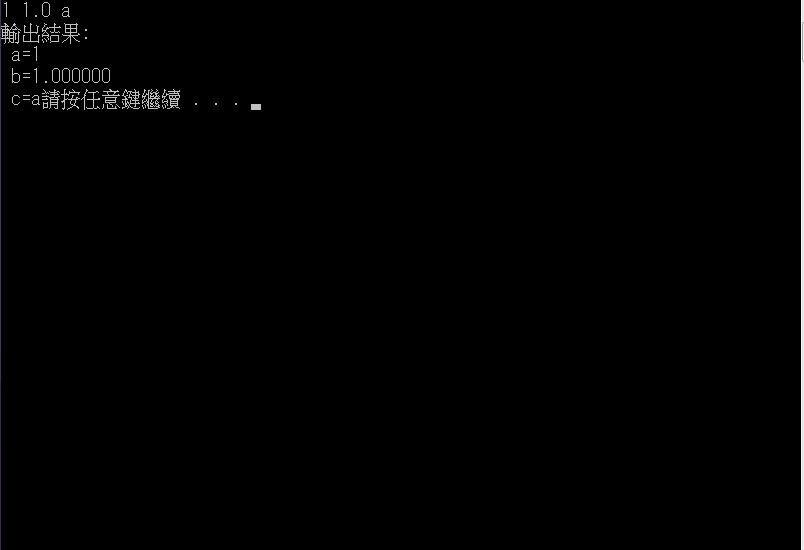

基本輸入/輸出函數
printf()函數:
| 種類 | 表示 | 功能 |
|---|---|---|
| 整數 | d | 以十進位 |
| o | 以八進位 | |
| x | 以十六進位 | |
| u | 以不帶符號十進位 | |
| l | 以長整數 | |
| 浮點數 | f | 小數點 |
| e | 以指數 | |
| 字元 | c | 以字元 |
| s | 以字串 |
| 符號 | 功能 |
|---|---|
| \n | 換行 |
| \r | 回歸 |
| \t | 跳格 |
| \b | 退格 |
| \f | 跳頁 |
scanf()函數:
main()
{
int a;
float b;
char c;
scanf(%d %f %c,&a,&b,&c);
printf("輸出結果:a=%d\n b=%f\n c=%c "a,b,c);
}
輸出結果:
printf()函數說明:
scanf()函數說明: